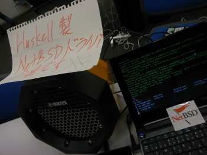

Metasepi team meeting #13
Table of contents
We had “Metasepi team meeting #13” at Open Source Conference 2014 Tokyo/Spring. At this meeting, I talked about rewriting NetBSD’s sound driver with Haskell language and Ajhc compiler. Also, we looked back on the iteration and had future plan of our next iteration, because Arafura as Metasepi’s first itelation is done.
The demo kernel’s HD Audio driver is partly rewritten using Haskell, i.e. the interrupt handler is rewritten using Haskell and the others are using C. Of course, the kernel can play sound on real hardware. You can see that s_alloc() function as Hasskell heap allocator is called continuously, on the demo video. GC occurs little, while the heap allocation occurs many many times. What does this mean? Ajhc maintains Haskell heap isolated by Haskell contexts. So, when hardware interrupt occurs on HD Audio, a Haskell context associated with the interrupt is assigned with new virgin heap. The heap isn’t hardly used, while the interrupt handler does easy action. Then, the context done. At the context ending, the dirty heap is restored to virgin condition and returned to heap pool of Ajhc runtime. This means that Haskell context always takes Haskell heap as virgin condition when next interrupt occurs! The trick is called “Context-Local Heaps (CLHs)”, and decreases GC frequency in NetBSD kernel in the extreme.
Now, Arafura iteration is closing as explained in past. Kernel design is in our next iteration:
“Rewrite NetBSD kernel using ATS2 compiler, with Snatch-driven development stype.”
We decide to name the new iteration as Bohai. Bohai (渤海) is the innermost gulf of the Yellow Sea on the coast of Northeastern and North China. However I hear that marine pollution occurs in the sea today. Let’s immediately clean up it with strong typed power! And you know the sea is home of Hongwei as ATS language author. De-gesso.
Slide
Metasepi team meeting #13: NetBSD driver using Haskell - masterq_teokure
Presentation Video
Demo Video
Demo source code
https://github.com/metasepi/netbsd-arafura-s1
Scene Photographs
 

blog comments powered by